Scene 023 · New · for review
Everyone Aboard
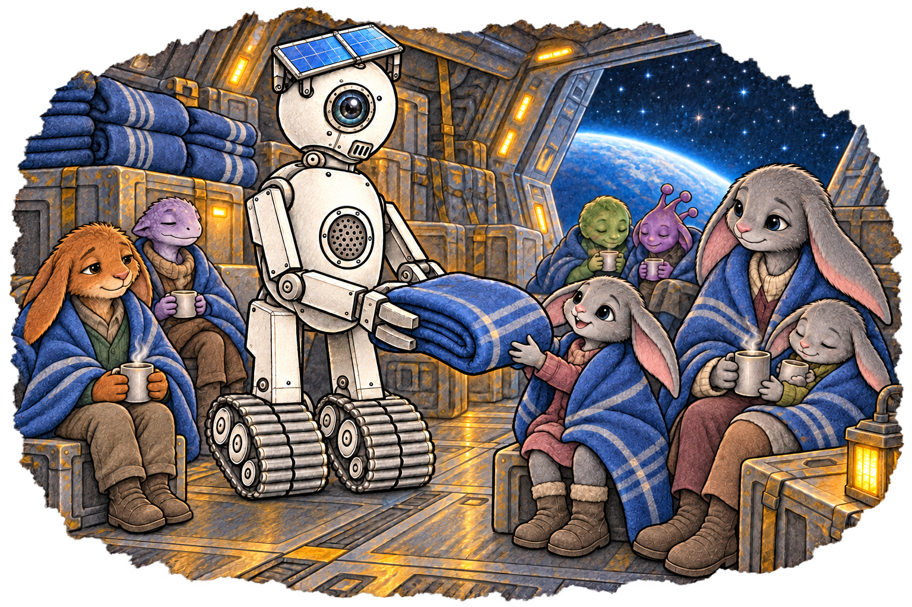
Download PNG · Tap the drawing to enlarge
Suggested placement · after paragraph 3
Afterward, the cargo bay is full of blankets and hot drinks and tired voices. A tall robot rolls through on a pair of treads with a stack of blankets balanced on its forklift claws. It’s got a solar panel on its head, one big camera eye, and a round speaker in its chest, and every time it hands somebody a blanket, the speaker announces, “CARGO SECURED.” Nobody corrects it.
Scene 045 · New · for review
Off the Ice
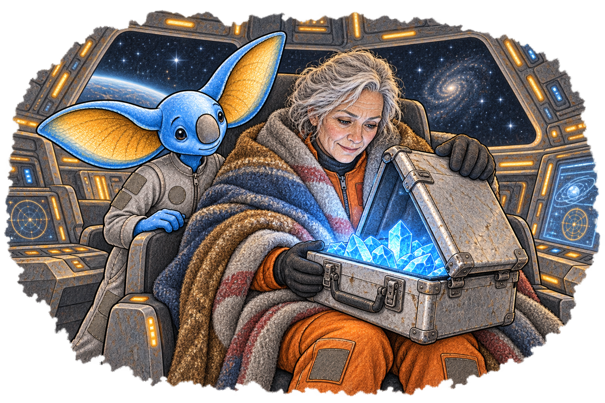
Download PNG · Tap the drawing to enlarge
Suggested placement · after paragraph 4
She opens the case. It’s full of glowing data crystals.
Scene 050 · New · for review
Keeper Cobble
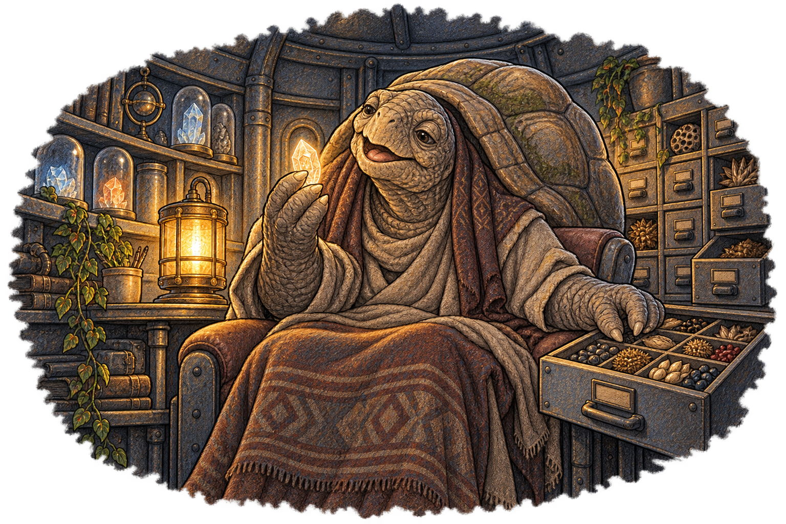
Download PNG · Tap the drawing to enlarge
Suggested placement · after paragraph 2
They’re very large, and very old, and very wrinkly, with a great domed shell on their back and a blanket over their knees. They’ve got a crystal in one hand, and they’re singing along with it…to an open drawer of seeds.
Scene 017 · New · for review
I Love Tight
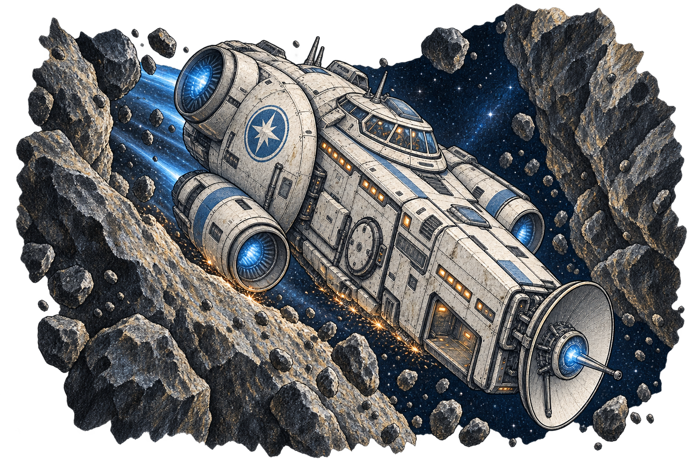
Download PNG · Tap the drawing to enlarge
Suggested placement · after paragraph 4
Rock fills the window on both sides. You could read the writing on it, if rocks had writing. Something scrapes along the bottom of the ship with a long, slow SCREEEECH that you feel in your teeth.
Scene 021 · New · for review
Belts
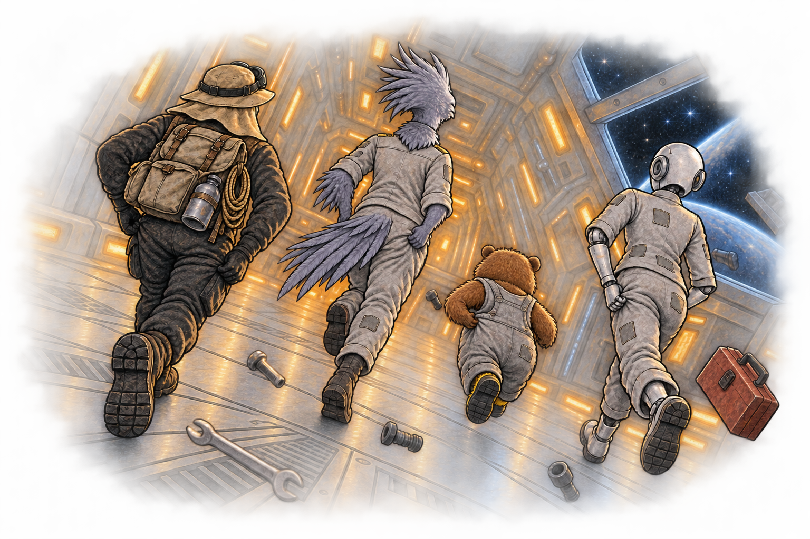
Download PNG · Tap the drawing to enlarge
Suggested placement · after paragraph 13
“Then RUN!”
Scene 052 · New · for review
One More
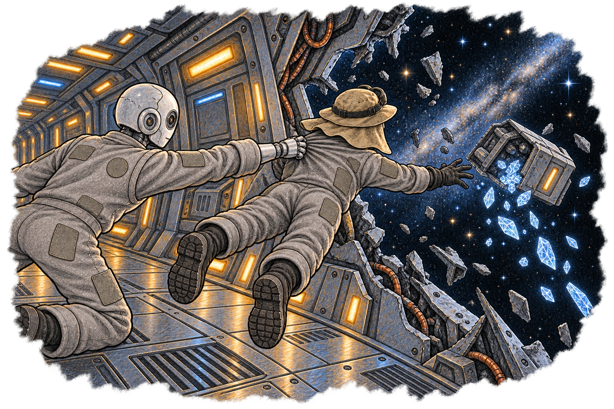
Download PNG · Tap the drawing to enlarge
Suggested placement · after paragraph 6
A metal hand closes around the back of your jumpsuit.
Scene 057 · New · for review
The Convoy
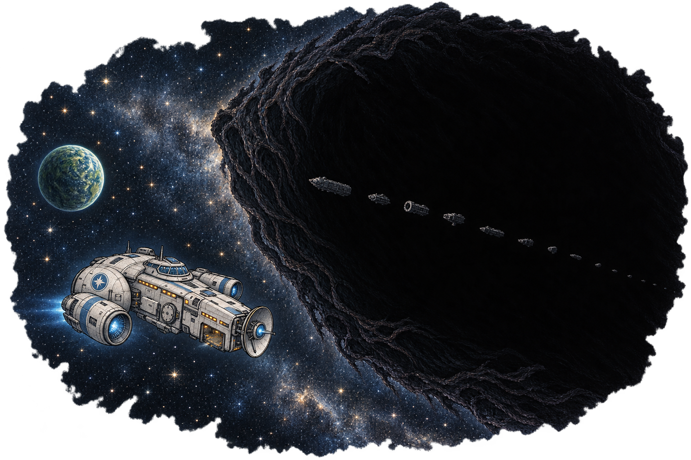
Download PNG · Tap the drawing to enlarge
Suggested placement · after paragraph 7
It fills half the window. There’s no screen in the way, and no dot for scale. It’s an ocean of darkness, with the stars just stopping at its edge, and it’s moving away from you slowly, like a whale that hasn’t noticed the minnows. Twelve small ships hang helpless in the dark behind it.
Scene 060 · New · for review
Catch
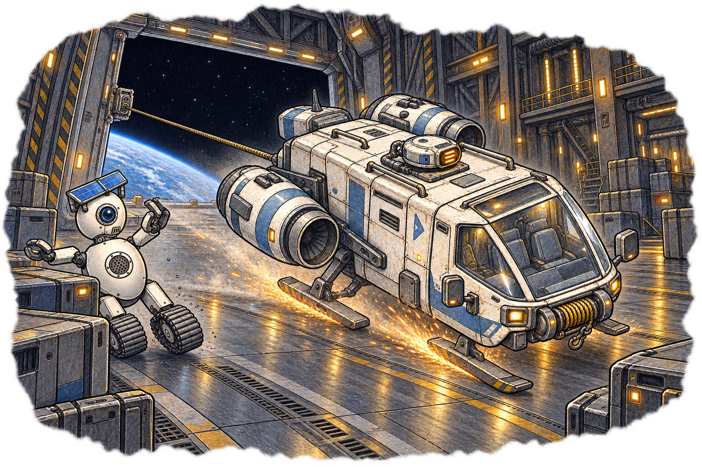
Download PNG · Tap the drawing to enlarge
Suggested placement · after paragraph 8
The shuttle goes in through the doors, bounces twice, and skids the whole length of the bay in a shower of sparks. The cargo bot rolls out of the way just in time. Behind you, the tow cable pulls tight, and the twelfth ship gets dragged along in the {world_name}’s shadow. The big ship’s engines cough, and catch, and ROAR, and she swings up and out of the cold with every light on board flickering.
Scene 062 · New · for review
Hold On to Something
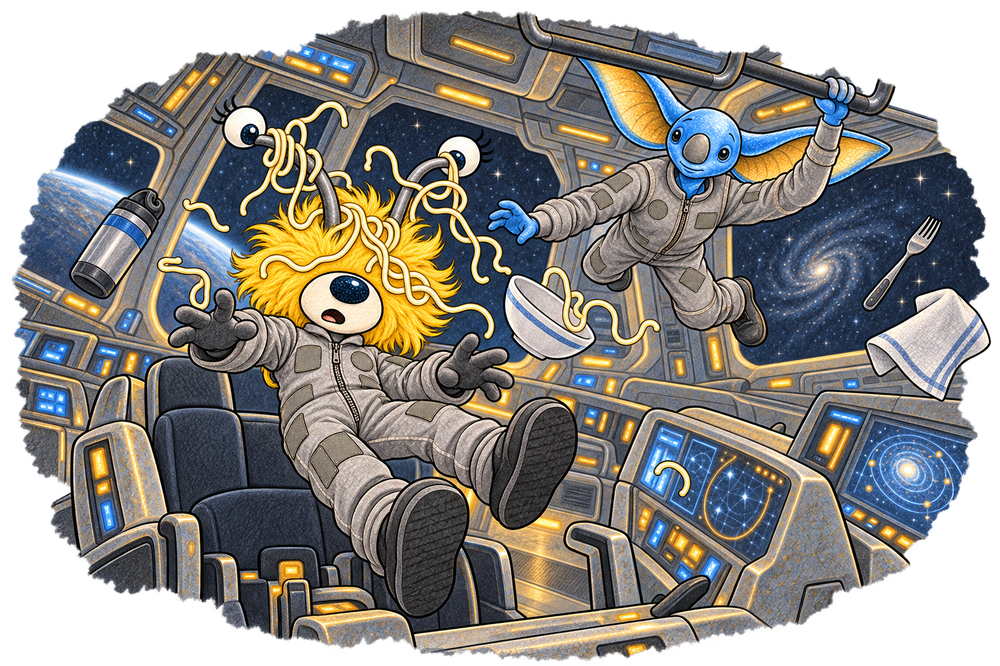
Download PNG · Tap the drawing to enlarge
Suggested placement · after paragraph 5
“I have NOODLES in my EYES!” Percy shouts. “I have a LOT of eyes!”
Scene 077 · New · for review
Stung
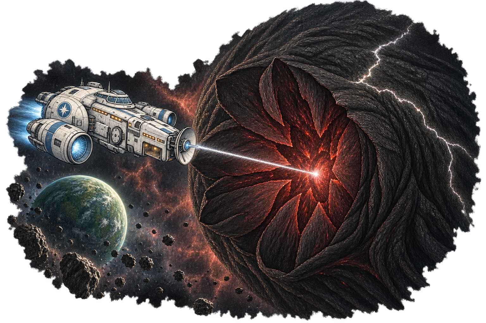
Download PNG · Tap the drawing to enlarge
Suggested placement · after paragraph 4
You don’t hear it, because there’s no sound in space. But you feel it, in your ribs, in the deck, in the air…a huge, low note from something that has never once been hurt, finding out what it’s like. A crack of white light runs across the darkness from one side to the other, like lightning across a night sky.
Scene 078 · New · for review
The Wall of Names
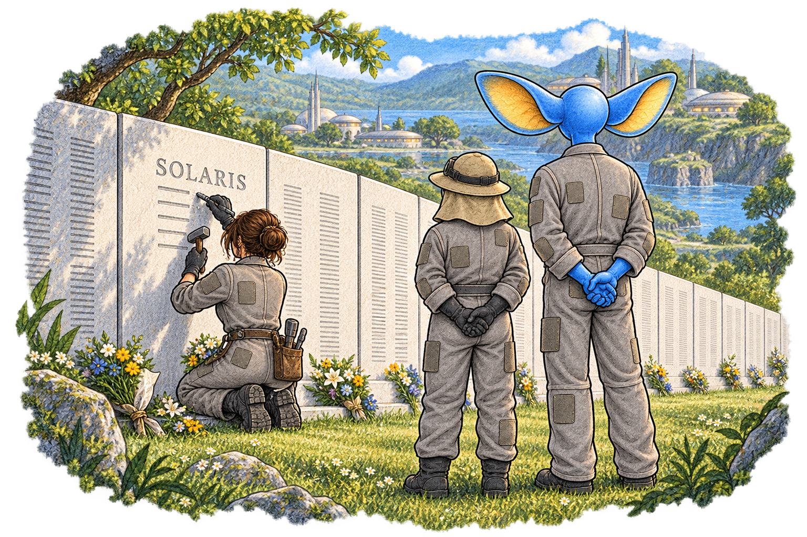
Download PNG · Tap the drawing to enlarge
Suggested placement · after paragraph 10
Captain Aster comes to stand beside you.
Approved opening set · hat corrected
Scene 001 · Approved
The Portal
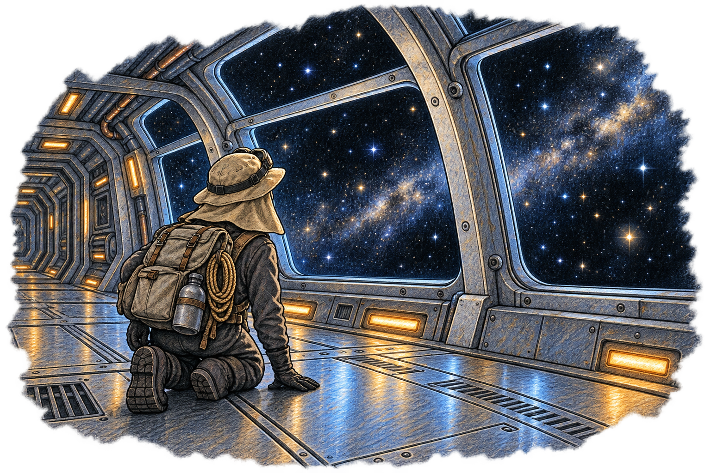
Download PNG · Tap the drawing to enlarge
Suggested placement · after paragraph 4
You spin around and get a really good view out the windows. “Are those stars…where the heck did I end up…is this a spaceship?” you say as you look out at the vastness of space and stars.
Scene 006 · Approved
The Bridge
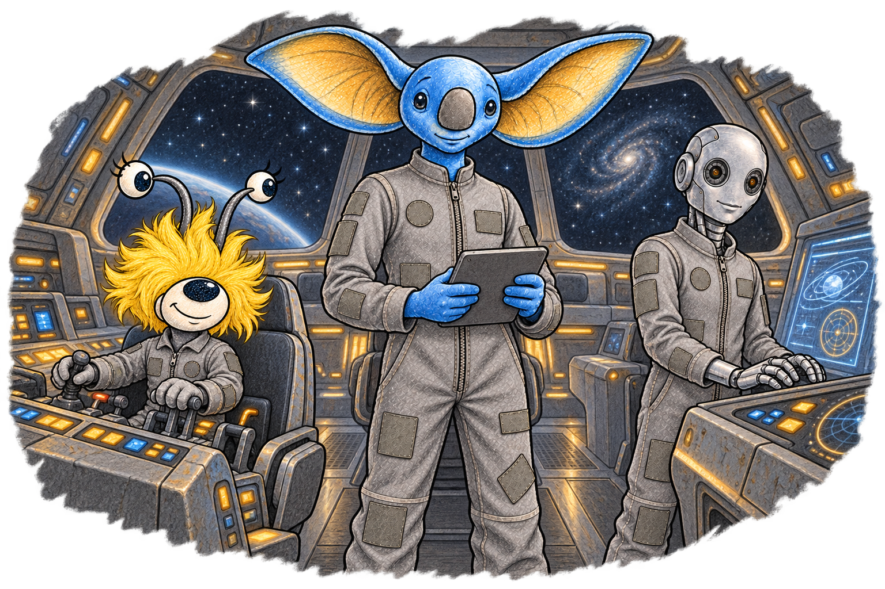
Download PNG · Tap the drawing to enlarge
Suggested placement · after paragraph 5
All of them are dressed the same, in loose-fitting grey jumpsuits with zippers down the middle and patches everywhere.
Scene 029 · Updated · matching expedition hat
Permission to Come Aboard
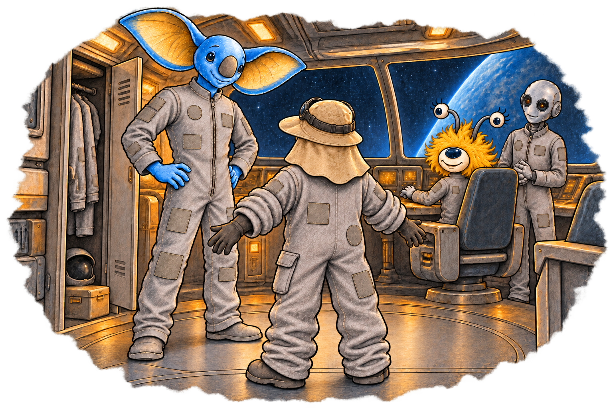
Download PNG · Tap the drawing to enlarge
Suggested placement · after paragraph 11
You put it on right there, over your clothes. Did I mention it’s about three sizes too big? It’s about three sizes too big. You have to roll the sleeves up four times.
Scene 032 · Approved
The Engine Room
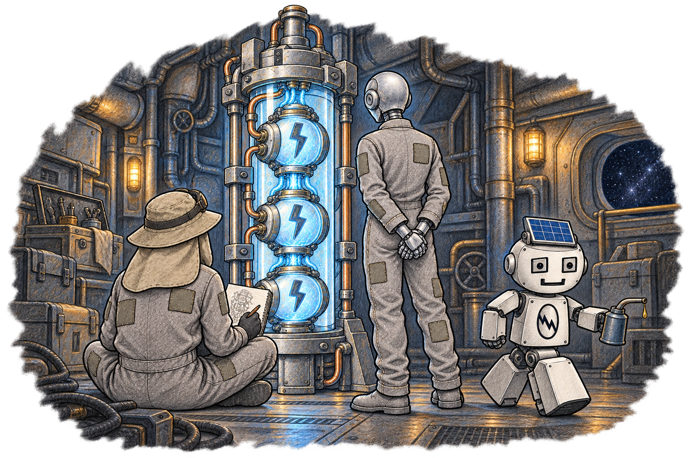
Download PNG · Tap the drawing to enlarge
Suggested placement · after paragraph 10
You sit down on the floor beside him with your notebook, and for a while the two of you just watch the light. You draw it. Bright, dim. Bright, dim.